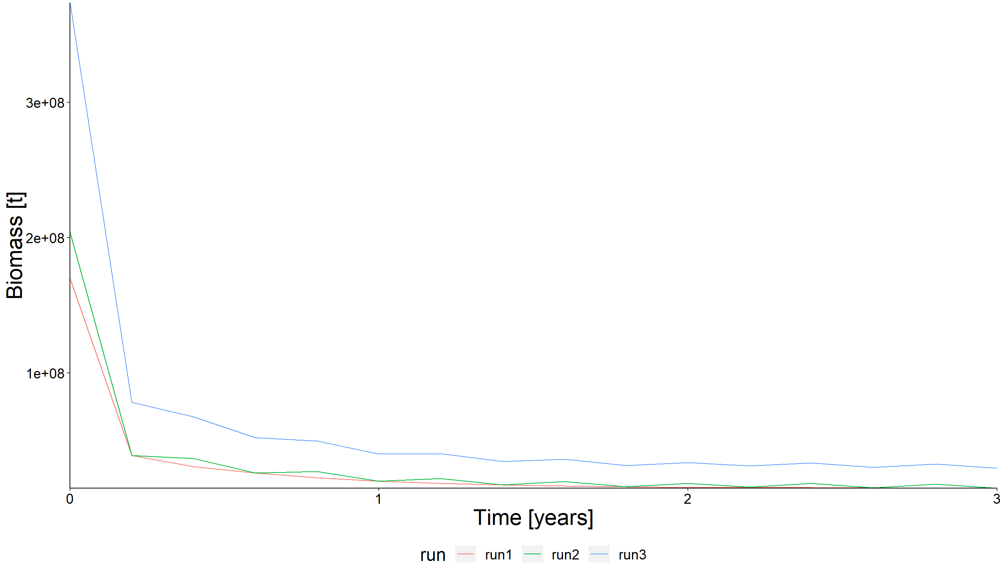
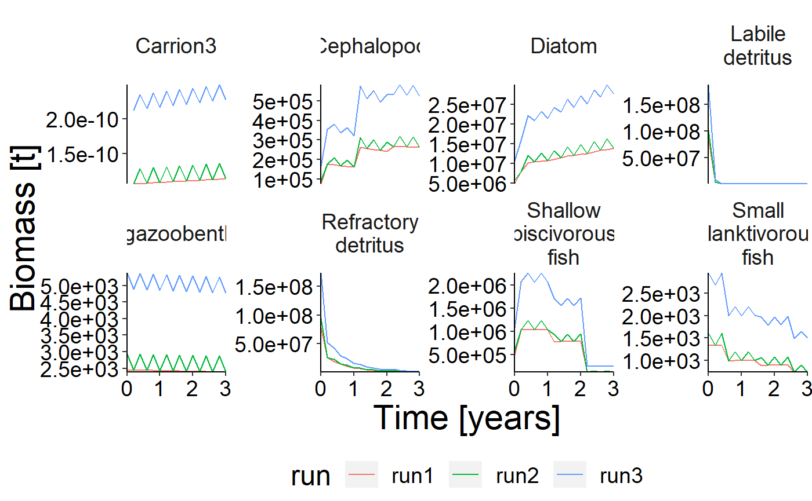
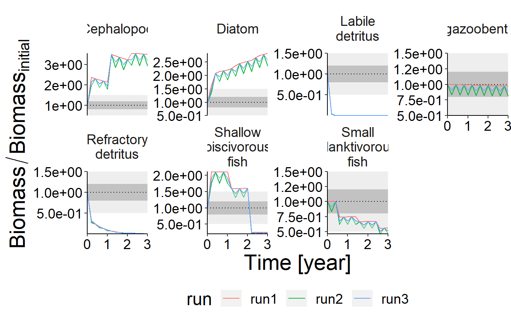
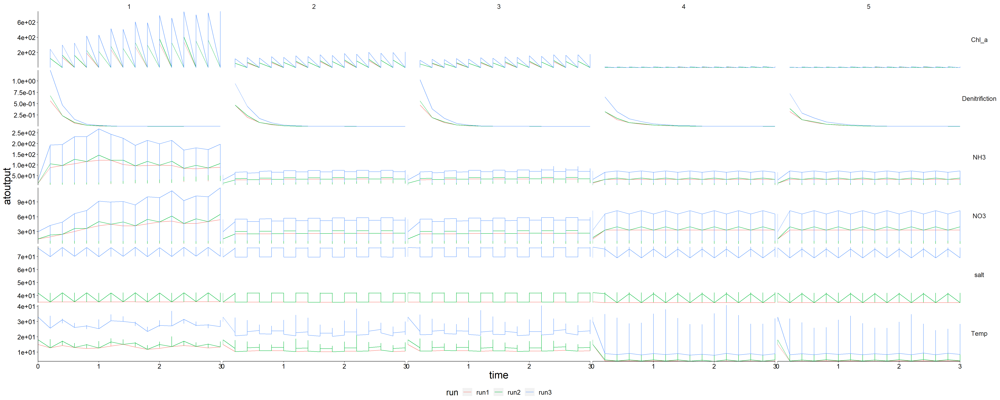

vignettes/model-comparison.Rmd
model-comparison.RmdNOTE: This vigentte is optimised for longer simulation runs. Therefore the output is not as pleasant due to the fact that the dummy setas file have a running time of 5 years.
In order to use this vignette make sure to render model-preprocess.Rmd for each simulation first. Save the resulting list of dataframes as shown in data-raw/data-vignette-model-preprocess.R. Of course, you can also use a personalised version of mode-preprocess.Rmd. Please make sure to add all resulting dataframes to the list of dataframes at the end of the preprocess vignette and change model-comparison.Rmd accordingly.
## Warning: package 'ggplot2' was built under R version 3.6.3library("gridExtra") gen_labels <- list(x = "Time [years]", y = "Biomass [t]") # You should be able to build the vignette either by clicking on "Knit PDF" in RStudio or with # rmarkdown::render("model-comparison.Rmd")
This section is used to read in the simulations. In order to demonstrate the vignette, dummy simulations are generated. Please change this accordingly.
result <- preprocess dummy_setas <- function(list, mult) { for (i in seq_along(list)) { if (is.data.frame(list[[i]])) { mult <- rep_len(mult, length.out = nrow(list[[i]])) list[[i]][, ncol(list[[i]])] <- list[[i]][, ncol(list[[i]])] * mult } } return(list) } store_data <- list(result, dummy_setas(result, mult = c(1, 1.2)), dummy_setas(result, mult = c(2, 2.2))) result <- combine_runs(outs = store_data, runs = c("run1", "run2", "run3"))
sum_bio <- agg_data(result$biomass, groups = c("time", "run"), fun = sum) plot <- plot_line(sum_bio, wrap = NULL, col = "run") update_labels(plot, gen_labels)

plot_line(result$biomass, col = "run", ncol = 4) %>% update_labels(gen_labels)

df <- convert_relative_initial(result$biomass) plot <- plot_line(df, col = "run", ncol = 4) plot <- plot_add_box(plot) update_labels(plot, labels = list(x = "Time [year]", y = expression(Biomass/Biomass[initial])))

plot <- plot_line(result$physics, wrap = NULL, col = "run") custom_grid(plot, grid_x = "polygon", grid_y = "variable")
